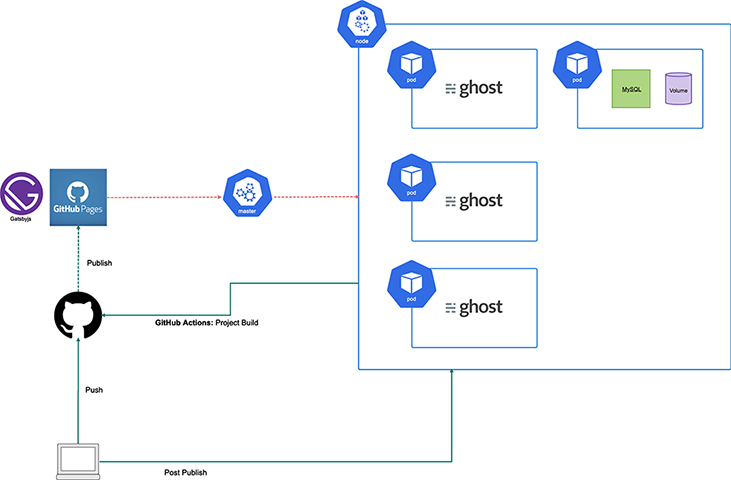

Kubernetes の基本的な操作方法を実際に操作しながら、JAMStack な構成の完成を目指します。
今回は、各社で用意したAmazon EKS (Amazon Elastic Kubernetes Service) を使用します。 Amazon EKSでは、コンテナ化されたアプリケーションのデプロイ、管理、スケールを Kubernetes を使って AWS で簡単に実行できます。
今回使用するリポジトリとスライドはこちらです。 https://w-i-z.github.io/qtech8-handson/slide.html https://github.com/W-I-Z/qtech8-handson
https://jamstack.org/
JavaScript + API + Markup の略。
Wordpress のように、テーマもサーバサイドの処理も同梱されたモノリシックなアプリケーションではなく、役割に応じて分割されたマイクロサービスアーキテクチャです。
GatsbyJS
https://www.gatsbyjs.org/
SSR などの機能を持った React ベースのアプリケーション。 JavaScript + Markup の役割。
ghost
Headless CMS のひとつ。 OSS 版とクラウド版があり、今回は OSS 版を Kurbenetes にデプロイする
https://ghost.org/
https://kubernetes.io/ja/docs/tutorials/kubernetes-basics/explore/explore-intro/
1 つ以上のアプリケーションコンテナ(Docker や rkt など)のグループとそれらのコンテナの共有リソースを表す Kubernetes の抽象概念です。 Pod には以下のものが含まれます: 共有ストレージ(ボリューム) ネットワーキング(クラスタに固有の IP アドレス) コンテナのイメージバージョンや使用するポートなどの、各コンテナをどう動かすかに関する情報
1 つ以上のアプリケーションコンテナ(Docker や rkt など)のグループとそれらのコンテナの共有リソースを表す Kubernetes の抽象概念です。 Pod には以下のものが含まれます:
Pod は常に Node 上で動作します。Node は Kubernetes ではワーカーマシンであり、クラスタによって仮想、物理マシンのどちらであってもかまいません。各 Node はマスターによって管理されます。Node は複数の Pod を持つことができ、Kubernetes マスターはクラスタ内の Node 間で Pod のスケジュールを自動的に処理します。マスターの自動スケジューリングは各 Node で利用可能なリソースを考慮に入れます。
pod.yaml
以下のコマンドで Pod を作成してみましょう。
$ kubectl apply -f ./chapter1/pod.yaml
Pod の状態を確認します。
$ kubectl get pods
describe コマンドでより詳細な情報を取得することもできます。
$ kubectl describe pods [Pod名]
https://kubernetes.io/docs/concepts/storage/volumes/
コンテナ内のディスク上のファイルは一時的なものであり、コンテナで実行する場合に重要なアプリケーションでは問題が発生します。 まず、コンテナがクラッシュすると、kubelet はコンテナを再起動しますが、ファイルは失われます-コンテナはクリーンな状態で起動します。 次に、コンテナをポッドで一緒に実行する場合、多くの場合、それらのコンテナ間でファイルを共有する必要があります。 Kubernetes Volume の抽象化は、これらの両方の問題を解決します。
volume.yaml
Volume を指定して、Pod に2つのコンテナを作成してみましょう。
$ kubectl apply -f ./chapter2/volume.yaml
ログが出力されているのが確認できます。
$ kubectl logs date-tail -c tail -f
Pod に入って、ログがあるか確認してみましょう。
$ kubectl exec date-tail -it sh $ ls -la /var/log/date-tail/output.log
https://kubernetes.io/ja/docs/concepts/workloads/controllers/replicaset/
ReplicaSet は、ReplicaSet が対象とする Pod をどう特定するかを示すためのセレクターや、稼働させたい Pod のレプリカ数、Pod テンプレート(理想のレプリカ数の条件を満たすために作成される新しい Pod のデータを指定するために用意されるもの)といったフィールドとともに定義されます。ReplicaSet は、指定された理想のレプリカ数にするために Pod の作成と削除を行うことにより、その目的を達成します。ReplicaSet が新しい Pod を作成するとき、ReplicaSet はその Pod テンプレートを使用します。
rs1.yaml
ReplicaSet を作成してみましょう。
$ kubectl apply -f ./chapter3/rs1.yaml
ReplicaSet と Pod の状態を確認します。
$ kubectl get replicasets $ kubectl get pods
replicasの値を修正して、Replica を増やしてみます。
replicas
rs2.yaml
$ kubectl apply -f ./chapter3/rs2.yaml $ kubectl get replicasets $ kubectl get pods
scale コマンドで、レプリカ数を増やすこともできます。
$ kubectl scale rs kuard --replicas=10 $ kubectl get replicasets $ kubectl get pods
※scale コマンドでは即時反映されるが YAML ファイルも修正しておかないと、デグレードする可能性があるので、必ず YAML ファイルにも反映させるようにしましょう。
https://kubernetes.io/docs/concepts/workloads/controllers/deployment/
Deployment で目的の状態を記述すると、Deployment Controller は制御されたレートで実際の状態を目的の状態に変更します。Deployment を定義して、新しい ReplicaSet を作成したり、既存の Deployment を削除して、すべてのリソースを新しい Deployment で適用できたりすることができます。
Deployment には以下の機能が含まれます。
deployment1.yaml
Deployment を作成してみましょう。
$ kubectl apply -f ./chapter3/deployment1.yaml
Deployment と Pod の状態を確認します。
$ kubectl get deployments $ kubectl get replicasets $ kubectl get pods
次に、kuard イメージのバージョンを修正した版をデプロイしましょう。
$ kubectl apply -f ./chapter3/deployment2.yaml
デプロイの情報とデプロイの履歴を確認します。
$ kubectl get deployments $ kubectl get replicasets $ kubectl get pods $ kubectl rollout history deployment kuard-service
ロールバックしてみましょう。
$ kubectl rollout undo deploy kuard-service --to-revision 1
$ kubectl create namespace handson
https://kubernetes.io/docs/tasks/configure-pod-container/configure-pod-configmap/
ConfigMap を使用すると、構成のアーティファクトを Image コンテンツから分離して、コンテナ化されたアプリケーションの移植性を維持できます
例えば、MySQL の設定ファイルを ConfigMap で作成し、作成された ConfigMap を MySQL イメージで使用することができます。
config-map.yaml
MySQL の設定を ConfigMap で作成してみましょう。
$ kubectl -f apply ./chapter4/config-map.yaml
ConfigMap を確認します。
$ kubectl get configmaps -n handson
https://kubernetes.io/docs/concepts/configuration/secret/
Kubernetes シークレットオブジェクトを使用すると、パスワード、OAuth トークン、ssh キーなどの機密情報を保存および管理できます。 この情報を Secret に入れることは、ポッド定義またはコンテナーイメージに逐語的に入れるよりも安全で柔軟です。
Secret に保存するデータは base64 でエンコードされた任意のデータを格納できます。 MySQL に渡すパスワードを Secret で作成してみましょう。 まずはパスワードを base64 エンコードします。
$ echo -n "user_password" | base64 $ echo -n "root_password" | base64
secret.yamlを修正して、Secret を作成します。
apiVersion: v1 kind: Secret metadata: name: mysql-secret type: Opaque data: MYSQL_ROOT_PASSWORD: "Base64エンコードしたパスワード" MYSQL_PASSWORD: "Base64エンコードしたパスワード"
$ kubectl apply -f ./chapter4/secret.yaml $ kubectl get secrets -n handson
これまで作成した ConfigMap と Secret を Pod で利用するには以下のようにします。
mysql.yaml
･･･ - name: MYSQL_PASSWORD valueFrom: secretKeyRef: key: MYSQL_PASSWORD name: mysql-secret - name: MYSQL_ROOT_PASSWORD valueFrom: secretKeyRef: key: MYSQL_ROOT_PASSWORD name: mysql-secret ･･･
volumeMounts: - mountPath: "/etc/mysql/conf.d/" name: mysql-config volumes: - name: mysql-config configMap: name: mysql-config-map
ついでに ConfigMap と Secret を使用した MySQL の Pod をデプロイします。
まずは、MySQLのデータを保存するボリュームを作成します。
$ aws ec2 create-volume --size=10 --volume-type=gp2 --availability-zone us-west-2
作成したボリュームのIDをmysql-pv-aws.yamlに入力してください。
次に、以下のコマンドを実行します。
$ kubectl apply -f ./chapter4/mysql-pv-aws.yaml $ kubectl apply -f ./chapter4/mysql.yaml $ kubectl get pods -n handson
MySQLに接続できるか確認します。
$ kubectl port-forward [Pod Name] 3306:3306 -n handson
別ターミナルで以下を実行し接続してください。
$ mysql -u root -p -h 127.0.0.1 Enter [Root Password]
https://kubernetes.io/ja/docs/tutorials/kubernetes-basics/expose/expose-intro/
Pod の論理セットと、それらにアクセスするためのポリシーを定義する抽象概念です。各 Pod には固有の IP アドレスがありますが、それらの IP は、Service なしではクラスタの外部に公開されません。Service によって、アプリケーションはトラフィックを受信できるようになります。ServiceSpec で type を指定することで、Service をさまざまな方法で公開することができます。
先ほどの MySQL でも Service を定義していたので、セレクタapp: ghost-dbに合致する Pod が、ポート 3306 で Pod 内での通信ができるようになっています。
app: ghost-db
apiVersion: v1 kind: Service metadata: name: ghost-db spec: ports: - port: 3306 protocol: TCP selector: app: ghost-db
https://kubernetes.io/docs/concepts/services-networking/ingress/
クラスター内のサービス（通常は HTTP）への外部アクセスを管理する API オブジェクトです。 Ingress は、負荷分散、SSL Termination、名前ベースの仮想ホスティングを提供できます
Ingress リソースには、Ingress リソースを処理してくれる Ingress Controller を導入する必要があります。Ingress Controller はいくつも種類がありますが、今回は AWS ALB Ingress Controller を使います。
ワーカーノードインスタンスプロファイルに対して、ALBIngressControllerIAMPolicy という IAM ポリシーを作成し、ALB Ingress Controller がユーザーに代わって AWS API を呼び出せるようにします。
GitHub からポリシードキュメントをダウンロードします。
$ curl -O https://raw.githubusercontent.com/kubernetes-sigs/aws-alb-ingress-controller/v1.1.2/docs/examples/iam-policy.json
ポリシーを作成します。
$ aws iam create-policy --policy-name ALBIngressControllerIAMPolicy --policy-document file://iam-policy.json
返されるポリシー ARN を書き留めておきます。
ワーカーノード用の IAM ロール名を取得します。 次のコマンドを使用して、aws-auth configmap を出力します。
$ kubectl -n kube-system describe configmap aws-auth
system:nodes グループが割り当てられている rolearn 値のロール名を記録します。
Name: aws-auth Namespace: kube-system Labels: <none> Annotations: <none> Data ==== mapRoles: ---- - groups: - system:bootstrappers - system:nodes rolearn: arn:aws:iam::111122223333:role/eksctl-alb-nodegroup-ng-b1f603c5-NodeInstanceRole-GKNS581EASPU username: system:node:{{EC2PrivateDNSName}} Events: <none>
AWSアカウント番号：111122223333 ロール名：eksctl-alb-Node group-ng-b1f603c5-NodeInstanceRole-GKNS581EASPU
前に識別した各ワーカーノードの IAM ロールに、新しい ALBIngressControllerIAMPolicy IAM ポリシーをアタッチします。 次のコマンドを、自分の AWS アカウント番号とワーカーノードの IAM ロール名に置き換えて実行してください。
$ aws iam attach-role-policy --policy-arn arn:aws:iam::111122223333:policy/ALBIngressControllerIAMPolicy --role-name eksctl-alb-nodegroup-ng-b1f603c5-NodeInstanceRole-GKNS581EASPU
次のコマンドを使用して、ALB Ingress Controller で使用するサービスアカウント、クラスターロール、およびクラスターロールバインディングを作成します。
$ kubectl apply -f https://raw.githubusercontent.com/kubernetes-sigs/aws-alb-ingress-controller/v1.1.2/docs/examples/rbac-role.yaml
alb-ingress-controller.yaml
alb-ingress-controller.yaml の以下の部分を、自分のクラスター名、VPC ID、および AWS リージョン名に置き換えてください。
spec: containers: - args: - --cluster-name=devCluster - --aws-vpc-id=vpc-xxxxxx - --aws-region=us-west-1
準備が整いました。Ingress Controller を作成しましょう。
$ kubectl apply -f ./chapter5/alb-ingress-controller.yaml $ kubectl get pod --all-namespaces
外部公開するアプリケーションを Deployment で作成します。今回は前述の通り、ghost を使います。
ghost-aws.yaml
ghost の Deployment を作成しましょう。
$ kubectl apply -f ./chapter5/ghost-aws.yaml $ kubectl get deploy $ kubectl get pods -n handson
ghost をデプロイしたら、Ingress を作成します。
ingress-aws.yaml
この部分が、外部からアクセスされたときのパスと Service リソース名・ポート名をマッピングしている箇所です。
http: paths: - path: / backend: serviceName: ghost servicePort: 2368
Ingress を作成しましょう。
$ kubectl apply -f ./chapter5/ingress-aws.yaml $ kubectl get ingress -n handson
出力
NAMESPACE NAME HOSTS ADDRESS PORTS AGE handson mm-handson-ingress * ********-handson-mmhandson-****-*********.us-west-2.elb.amazonaws.com 80 1m
アドレスにアクセスできたら成功です。